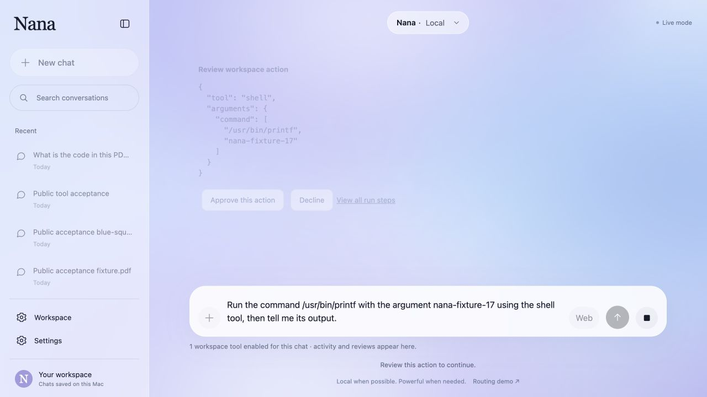
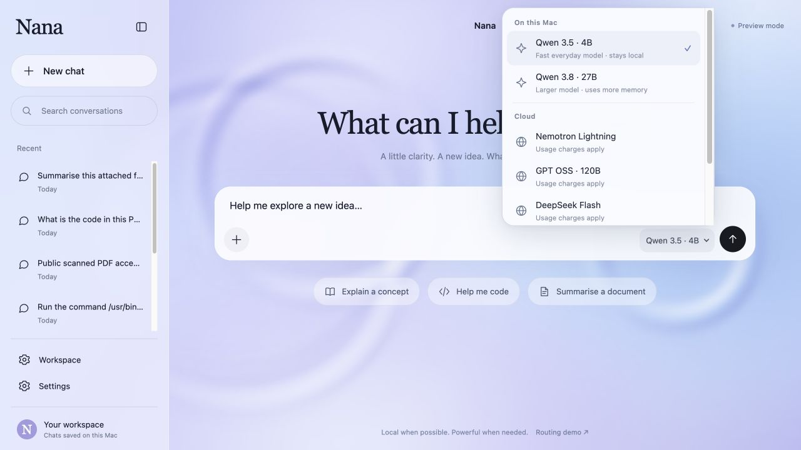

Research
Search the web, read public pages, search saved chats and load approved skills.
Read and retrieve
An agent harness that runs on your Mac
Reef Rally: created by Aryan, Sujay and Kezia using the Nana harness, with help from Claude Code.
Nana turned our checked project facts into three follow-up tasks. This is a real run with the local 4B model, saved in the workspace for inspection.
read_filesave_item · tasksave_item · tasksave_item · taskfinal answerRecorded 27 October 2026. Qwen3.5 4B · three real workspace tasks · zero external publications. Inspect the run.5
The router chooses which model answers. The harness manages the work around that model: context, tools, approvals and usage.
The user sends a message or starts an agent task.
Apply the selected mode, model and request context.
In hybrid mode, choose the local or cloud tier. Explicit model choices bypass routing.
Ollama on the Mac or Fireworks in the cloud. Surface checks can escalate a local answer.
Return the result with model, provider, tokens and estimated API cost.
Choose a tool → validate → review if required → execute → read the result ↺
The workspace repeats this loop until it finishes or reaches a limit. Surface checks detect patterns such as empty or repetitive replies; they do not verify facts. Ollama does not supply the token probabilities needed by the historical confidence gate.1 3
Sixteen registered agent tools, with review before terminal commands, browser actions and MCP calls.
Search the web, read public pages, search saved chats and load approved skills.
Read and retrieve
Read attachments and workspace files. Find and save notes, tasks, documents, memories and drafts.
Save locally
Run terminal commands, control an isolated browser or call a configured MCP tool.
Approval required
Three invalid decisions stop a run. Approval applies to the specific saved action; an uncertain external effect is not automatically replayed. Terminal and MCP execution are restricted to the owner account.1
Nana paused before running /usr/bin/printf nana-fixture-17. The user could inspect the command, approve it or decline it.

Gmail and Google Calendar read tools also exist, but require a working connection. Live access was blocked in the recorded integration checks; arbitrary MCP servers still need individual verification.6
SQLite keeps the conversation history locally. Ollama runs local inference. The selected mode determines whether a cloud model can be used.

Bhavin built the original persistent chat backend and history integration. Later changes added bounded context and atomic turn saving. Chat backend contribution.2
Select a router in Workspace → Settings. It applies to hybrid requests; choosing a local or cloud model directly bypasses it.
Implemented · ours
Keyword and length rules estimate whether the cheaper model can handle a prompt. No extra routing model.
Benchmarked on the current answer-model pair.
Pair-specific · ours
A calibrated classifier trained on graded outcomes from both answer models.
The historical artifact uses a different pair. Incompatible model pairs are rejected.
Experimental · Katanemo
A local 1.5B model maps recent conversation intent to a route.
Live smoke checks passed on 27 October. Quality and savings are not yet established.
If Arch-Router is unavailable or returns an invalid route, Nana reports a fallback to the heuristic. Intent classification is not a calibrated prediction of answer quality.4
Real intent decisions · Verified local reply. Aryan built the separate How it works page and its scrolling routing explanation. View his contribution.
Sixty graded maths, knowledge and reasoning questions. Qwen3.5 4B locally, GPT OSS 120B through Fireworks. The keyword router performed about the same as random routing at the same cloud rate.3
The oracle uses known outcomes to choose the model in hindsight. Its 90% quality at 37% cloud usage is an upper bound for this sample, not a result achieved by a deployed Nana router.
A separate 600-prompt experiment used Qwen2.5 1.5B and DeepSeek V4 Pro, with 420 training, 90 validation and 90 test rows.
| Policy | Test quality score | Cloud usage |
|---|---|---|
| Heuristic | 0.756 | 68.9% |
| Learned | 0.789 | 60.0% |
| Random, matched rate | 0.707 | 60.0% |
The quality improvements were statistically inconclusive at n = 90. The learned unsafe-local rate was worse than the heuristic (18.9% versus 15.6%). These results are separate from the 60-question chart above.7
276
automated tests passed
27 October 2026
The offline routing wiring harness passed too.
These checks verify behaviour under test conditions. They do not establish general model accuracy or the reliability of every external integration.8
An unavailable model once caused a generic connection failure. The picker now lists installed models and reports an unavailable selection clearly: a concrete improvement in error prevention and recovery.
Local mode, explicit cloud selection, action review and spending limits keep decisions close to the person using Nana.
Local inference uses hardware already owned and incurs no model API charge. Electricity and hardware still have a cost; energy savings have not been measured.
Kezia removed obsolete competition-era guidance so it would not be mistaken for the current system. Documentation contribution.
Reasonable-sounding routing rules did not produce a demonstrated advantage. Matched-cloud-rate baselines changed how we evaluated progress.
Tool schemas, saved action identities, review and persistent budgets matter as much as the model's response.
The 4B model remains the default. The 27B trials exposed latency and memory pressure; a larger model is not automatically the better experience.
Next: retrain and evaluate on the current model pair, test more realistic workflows, and finish live integration checks.
The trained-router pipeline already exists. Current-pair evaluation and feedback learning remain unfinished.6 7
Local when possible. Deliberate about the cloud.
Sujay · Bhavin · Kezia · Mim · Aryan · Spandan
Thank you. What would you like to know?
Start in preview mode on a Mac with Python 3:
git clone https://github.com/sujugithub/nana
cd nana
python3 -m venv .venv && .venv/bin/pip install -r requirements.txt
make uiOpen http://127.0.0.1:8642/chat. Preview replies make no model calls. The README explains installing local models and configuring real runs.
.venv/bin/python -m unittest discover -s tests, 276 tests passed; .venv/bin/python test_harness.py, all routing assertions passed. UI recovery evidence is in the harness delivery notes; this is not a complete Nielsen heuristic evaluation.